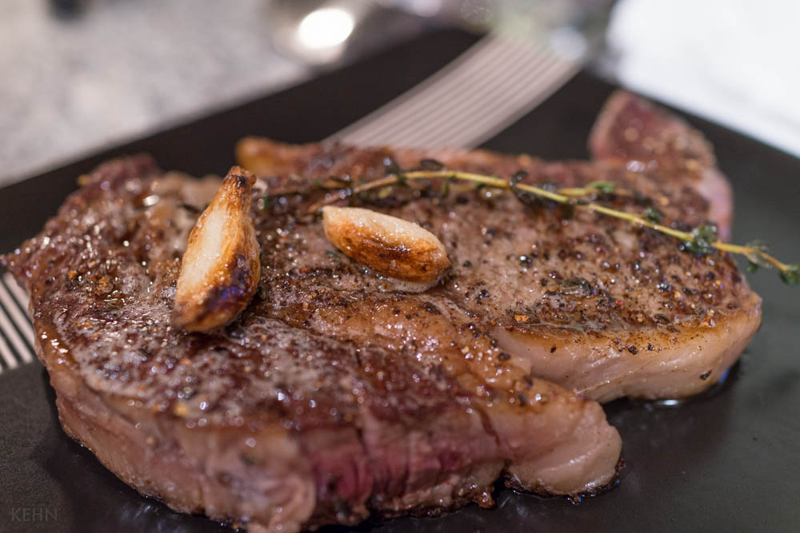

Rib Eye Steak

Home
Description
Ribeye steak, seasoned salt, and pepper are all you need for a perfectly grilled steak. Make sure your briquettes are red hot.
Ingredients
- 1 (12 ounce) ribeye steak
- 1/2 teaspoon seasoned salt
- 1/4 teaspoon freshly cracked black pepper, or to taste
Steps
- Gather all ingredients.
- Season steak evenly, using 1/4 teaspoon seasoned salt and 1/8 teaspoon black pepper on each side. Set aside.
- Light charcoal briquettes. Once they are red hot, place steak on the grates. Grill for 4 to 5 minutes. Turn steak over and grill an additional 2 to 3 minutes.
- Tent steak with aluminum foil and let rest briefly before serving.